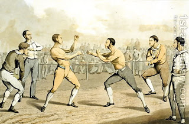

Kiddushin 28 - Slander

The courts once had this power, that if one called another a slave, he was to be put under a ban, and if he called him a "mamzer" (bastard), the courts could flog him.
If one calls another a bad person (rasha), courts do not get involved, but the slandered is allowed to compete with the offender in business, even unfairly. What about the law of not taking revenge? It does not apply if one is hurt or humiliated in public. However, since it is uncertain if the above ruling is accepted, one should refrain from revenge even in this situation.
Purpose of the blog Mistakes are completely mine, and final law can not be definitively deduced from the summaries. Have a great day!